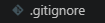

Escribes tu código
Trabajas en tu computadora, creas o modificas archivos
git add .
Aprende a usar GitHub paso a paso
"Git es el cerebro 🧠, GitHub es la red social 🌐."
"Git guarda tu código, GitHub lo presume."

Un sistema que permite gestionar y rastrear los cambios en el código fuente a lo largo del tiempo, facilitando la colaboración y el desarrollo eficiente de software.
Descarga Git desde su página oficial e instálalo en tu sistema operativo.
Página oficial de GitInstalación y primeros pasos con Git
Navega a github.com en tu navegador.

Haz clic en Registrarse o en Continue with Google para usar tu cuenta de Google.

Sigue las indicaciones para crear tu cuenta personal.
Verifica tu dirección de correo electrónico Obligatorio

¡Listo, ya tienes tu cuenta creada!

Algunas empresas crean cuentas de usuario administradas para sus empleados. No puedes registrarte con un correo que ya esté vinculado a una cuenta administrada.
Si tienes problemas para verificar tu correo, consulta la guía Verificar tu dirección de correo electrónico dentro de la documentación oficial de GitHub.


Estos son algunos de los comandos básicos de git y los que
posiblemente mas utilices, espero que te ayuden :D
Haz clic en
cualquier comando para copiarlo al portapapeles.
1 · Configuración inicial
Una vez que has instalado Git, es recomendable configurar tu nombre de usuario y correo electrónico:
⚠️ Sin esto no te permitirá hacer commits.
2 · Iniciar un proyecto
Estos son los cambios que necesitas hacer para iniciar un proyecto con Git:
3 · El ciclo diario
Son los comandos que usas diariamente:
4 · Ramas
Estos son los comandos que usas para trabajar con ramas:
⚠️ Un merge puede causar conflictos si los cambios en ambas ramas son incompatibles. Cuando haces un merge, no hay forma de deshacerlo una vez que se resuelven los conflictos.
5 · Si algo va mal
Git guarda tu trabajo en dos pasos: preparar y guardar. Cuando cambias archivos, Git ve esos cambios, pero no los guarda directamente. Primero eliges qué cambios quieres incluir (eso es staging o preparar). Luego los guardas con un commit. Es como hacer una foto: primero eliges qué quieres que salga en la foto (preparar) y luego haces la foto (guardar).
Para trabajar con GitHub, imagina que tienes dos "copias" de tu proyecto:
Tú trabajas en tu Local. Cuando quieres que GitHub se entere, haces un commit (guardar foto instantánea) y luego un push (enviar a la nube).
Trabajas en tu computadora, creas o modificas archivos
git add .
Haces un "commit" — es como tomar una foto de tu proyecto
git commit -m "tu mensaje aquí"
Haces un "push" — envías todo a GitHub para que otros lo vean
git push origin main


Vincular GitHub con VS Code:
Hacer cambios (Flujo diario):
Para usar la terminal en VS Code, presiona Ctrl + Ñ o ve al menú Terminal → New Terminal. Una vez abierta, ejecuta estos comandos en orden:
git add . # Prepara todos los archivos para subir
git commit -m "Tu mensaje" # Crea el punto de guardado (commit)
git push origin main # Sube los cambios al repositorio remotoNota: Asegúrate de estar dentro de la carpeta de tu proyecto en la terminal antes de escribir estos comandos.
Un commit profesional es claro, conciso y descriptivo. Sigue esta estructura:
Estructura de un commit
Tipos
| feat | Nueva funcionalidad |
| fix | Corrección de bugs |
| perf | Mejora de rendimiento |
| refactor | Cambio interno sin afectar comportamiento |
| style | Formato (espacios, tabs, etc.) |
| docs | Documentación |
| test | Tests |
| build | Build, dependencias, scripts |
| ci | Integración continua |
Reglas
Nota: Cuanto más claro sea el mensaje, mejor será para otros desarrolladores. Asegurate de dejar claro que archivo estás modificando.
"Una rama es como una copia paralela de tu proyecto donde puedes experimentar sin miedo a romper nada."
"La rama main es el tronco del árbol. El resto son ramas que crecen a los lados."
Cuando creas una nueva rama, Git hace una copia del estado actual de
tu código. Puedes modificarla libremente y, si todo va bien, unirla
de nuevo a main. Si algo sale mal, simplemente la
eliminas.
Este diagrama muestra cómo una rama se separa de main, recibe commits propios, y luego se fusiona.
Parte siempre desde main actualizado
git switch -c feature/mi-nueva-funcionalidad
Edita archivos y guarda tus avances con commits descriptivos
git add . && git commit -m "feat: añadir login"
Publica tu rama para que otros la vean o para hacer un Pull Request
git push origin feature/mi-nueva-funcionalidad
Vuelve a main y une tu rama. ¡Tu código ya está integrado!
git switch main && git merge feature/mi-nueva-funcionalidad
Crear y navegar
Fusionar y eliminar
Consecuencias de hacer un merge
git revert o git reset con
cuidado).
git branch para comprobarlo).
Consecuencias de eliminar una rama local
git branch -d solo borra la rama si ya fue
fusionada, lo cual es una protección. Pero
git branch -D (mayúscula) la elimina
aunque tenga commits sin fusionar,
perdiendo esos cambios.
Consecuencias de eliminar una rama remota
git fetch o git pull si
intentan actualizarla.
Cuando trabajas en GitHub, en lugar de hacer
merge directamente, lo normal es abrir un
Pull Request (PR). Es una solicitud para que tus
compañeros revisen tu código antes de integrarlo en
main.
git push origin nombre-ramaUn conflicto ocurre cuando dos ramas modifican la misma línea de un archivo. Git no sabe cuál versión conservar y te pide que decidas tú.
Git marcará el conflicto así en el archivo:
<<<<<<< HEAD (tu rama actual)
console.log("Hola mundo");
=======
console.log("Hello world");
>>>>>>> feature/traduccionSimplemente edita el archivo, deja solo la versión correcta, guarda y haz un commit nuevo. ¡Conflicto resuelto!

Un archivo .gitignore es un fichero de
configuración utilizado por Git que le indica qué archivos o
carpetas debe ignorar, es decir, no incluir en el control de
versiones.
Aunque esos archivos existan en tu proyecto, Git no los rastreará ni los subirá al repositorio.
El archivo .gitignore contiene patrones que indican qué
ignorar:
node_modules/
*.log
.env
dist/| Patrón | Significado |
|---|---|
| node_modules/ | Ignora toda la carpeta de dependencias |
| *.log | Ignora cualquier archivo con extensión .log |
| .env | Ignora el archivo de variables de entorno sensibles |
| dist/ | Ignora la carpeta de archivos generados en el build |
node_modules/
npm-debug.log*
yarn-debug.log*
.env
dist/
build/| Patrón | Por qué se ignora |
|---|---|
| node_modules/ |
Contiene todas las dependencias del proyecto. Pueden pesar
cientos de MB y se reinstalan fácilmente con
npm install.
|
| npm-debug.log* yarn-debug.log* |
Logs generados automáticamente cuando ocurre un error durante la instalación. Son locales y no aportan nada al repositorio. |
| .env | Contiene variables de entorno sensibles: claves de API, credenciales de bases de datos, contraseñas. Subirlo supone un grave riesgo de seguridad. |
| dist/ / build/ | Carpetas generadas por el proceso de compilación o transpilación (Webpack, Vite…). Se regeneran a partir del código fuente, no tiene sentido versionar su contenido. |
__pycache__/
*.pyc
.env
venv/
dist/
build/| Patrón | Por qué se ignora |
|---|---|
| __pycache__/ | Carpeta que Python genera automáticamente para almacenar módulos en caché y acelerar su carga. Es específica de cada máquina y sistema operativo. |
| *.pyc |
Archivos de bytecode generados al interpretar
los .py. No son código fuente y varían entre
versiones de Python y entre sistemas.
|
| .env | Contiene variables de entorno sensibles que nunca deben compartirse públicamente. |
| venv/ |
Entorno virtual local con las dependencias instaladas. Cada
desarrollador crea el suyo con
python -m venv venv. Contiene rutas absolutas que
causan conflictos entre máquinas.
|
| dist/ / build/ |
Carpetas generadas al empaquetar el proyecto (con
setuptools o pyinstaller). Se
regeneran fácilmente y no deben versionarse.
|
target/
*.class
*.jar
*.war
*.log| Patrón | Por qué se ignora |
|---|---|
| target/ | Carpeta donde Maven o Gradle depositan todos los archivos generados durante la compilación. Se regenera completamente al construir el proyecto. |
| *.class |
Bytecode compilado por javac a partir del código
fuente .java. Es específico de la máquina virtual
y se regenera en cada compilación.
|
| *.jar |
Artefacto empaquetado con el código compilado y sus
dependencias. Es la salida del build, no código fuente. Se
regenera con mvn package o
gradle build.
|
| *.war |
Similar al .jar pero para aplicaciones web Java
desplegadas en servidores como Tomcat. También es un artefacto
de build, no fuente.
|
| *.log | Registros de ejecución generados localmente durante pruebas o el servidor. Son específicos de cada entorno y no aportan valor al repositorio. |
vendor/
*.log
.env| Patrón | Por qué se ignora |
|---|---|
| vendor/ |
Carpeta donde Composer instala todas las dependencias. Puede
ser muy pesada y se restaura completamente ejecutando
composer install a partir del
composer.lock.
|
| *.log | Archivos de log generados por el servidor web (Apache, Nginx) o el framework (Laravel, Symfony). Son locales y no deben versionarse. |
| .env | Contiene configuración sensible del entorno: credenciales de base de datos, claves de cifrado, tokens de servicios externos. Nunca debe subirse al repositorio. |
.DS_Store
Thumbs.db
*.log
*.tmp
*.swp
.env.gitignore antes del primer commit.git status..gitignore no
lo eliminará automáticamente: debes usar
git rm --cached <archivo>.
git init
touch .gitignore
git add .
git commit -m "Primer commit"
El archivo .gitignore es una herramienta esencial para
mantener tus proyectos limpios, seguros y organizados.
GitHub ofrece una colección de plantillas de
.gitignore para diferentes lenguajes y frameworks.
Puedes usarlas como base para tu proyecto:
Pon a prueba lo que has aprendido. Una pregunta a la vez.
Practica los comandos reales de Git en un terminal simulado. Completa los 5 retos para ganar.
Terminal simulada con autocompletado (Tab), historial (↑↓) y sintaxis coloreada. Completa los 6 pasos del flujo real.
Estado de archivos
Comandos disponibles
git statusver estadogit add .añadir todo al staginggit add <archivo>añadir un archivogit commit -m "msg"crear commitgit loghistorial completogit log --onelinehistorial compactogit push origin mainsubir a remotogit diffver cambiosgit restore --staged .quitar del staginggit branchlistar ramasgit remote -vver remotosls / clear / helputilidades
Tienes un proyecto Node.js. Escribe las reglas correctas en el
.gitignore para que solo queden los archivos de
código fuente. Observa cómo cambia el estado de cada archivo en
tiempo real.
0 de 6 archivos ignorados correctamente
📁 Archivos del proyecto
📄 .gitignore
# escribe tus reglas aquí, una por línea
Visual Studio Code es un editor de código muy popular que tiene integración nativa con Git. Esto significa que puedes hacer commits, ver cambios, manejar ramas y resolver conflictos sin salir del editor.
Nota: Para usar Git en VS Code, asegúrate de tener Git instalado
en tu sistema y que VS Code lo reconozca. Puedes comprobarlo
abriendo la terminal integrada y ejecutando
git --version.

El panel Source Control (icono de rama en la barra lateral izquierda, o atajo Ctrl+Shift+G) es tu centro de mando para Git. Desde aquí puedes ver qué archivos han cambiado, añadirlos al área de preparación (stage) y crear commits, todo de forma visual.
Cuando editas un archivo, VS Code lo marca automáticamente en el explorador de archivos con una letra:
En el panel Source Control verás los mismos archivos agrupados en dos secciones: Changes (cambios sin preparar) y Staged Changes (cambios listos para el commit).

Antes de hacer un commit debes preparar los archivos que quieres incluir. En VS Code tienes dos formas de hacerlo:
Los archivos preparados se moverán a la sección Staged Changes. Si cambias de opinión, haz clic en el icono − para retirarlos del stage.

Una vez preparados los archivos, escribe un mensaje descriptivo en el campo de texto que dice "Message (Ctrl+Enter to commit)" y pulsa Ctrl+Enter (o haz clic en el botón Commit ✔). El commit quedará registrado en el historial local de tu repositorio.
Consejo: Un buen mensaje de commit responde a la
pregunta "¿Qué hace este cambio?", por ejemplo:
Añade formulario de contacto.

Las ramas (branches) te permiten trabajar en una nueva funcionalidad o corrección sin tocar el código principal. VS Code hace que crear y cambiar entre ramas sea tan sencillo como hacer clic en la barra de estado inferior.
En la esquina inferior izquierda de VS Code verás el nombre de la
rama actual (normalmente main o master).
Haz clic sobre él para abrir el menú de ramas y selecciona
Create new branch…. Escribe el nombre de tu nueva
rama (por ejemplo, feature/formulario-contacto) y pulsa
Enter.
VS Code creará la rama y cambiará a ella automáticamente. Todos los
commits que hagas a partir de ahora irán a esta rama sin afectar a
main.


Desde el mismo menú de la barra de estado puedes seleccionar cualquier rama existente para cambiar a ella. VS Code actualizará los archivos del proyecto al estado de esa rama de forma instantánea.

Cuando tu funcionalidad esté lista y quieras incorporarla a
main, sigue estos pasos dentro de VS Code:
main) usando la barra de
estado inferior.
feature/formulario-contacto).
main.

Un conflicto de merge ocurre cuando dos ramas han modificado la misma parte de un archivo de forma distinta y Git no puede decidir qué versión conservar. VS Code incluye una herramienta visual que convierte este proceso —habitualmente frustrante— en algo manejable.
Cuando se produce un conflicto, VS Code marca el archivo con una C roja en el explorador y en el panel Source Control. Al abrirlo, verás el código dividido en bloques con marcadores especiales:
<<<<<<< HEAD — inicio de tu
versión (rama actual).
======= — separador entre las dos versiones.>>>>>>> feature/… — inicio de la
versión entrante (rama que estás fusionando).

Encima de cada bloque en conflicto aparecen cuatro acciones rápidas. Elige la que mejor se adapte a tu caso:
También puedes editar el archivo manualmente: simplemente borra los
marcadores (<<<, ===,
>>>) y deja el código exactamente como quieres
que quede.
Una vez resueltos todos los conflictos del archivo, guárdalo (Ctrl+S). VS Code dejará de marcarlo con la C roja. Repite el proceso con cada archivo en conflicto y, cuando todos estén limpios, ve al panel Source Control y realiza un commit para cerrar el merge:
Merge feature/formulario-contacto en main.

¡Enhorabuena! Ahora sabes usar VS Code como tu interfaz principal de Git: puedes preparar y confirmar cambios, trabajar con ramas y superar los conflictos de merge sin necesidad de recordar ningún comando de terminal.